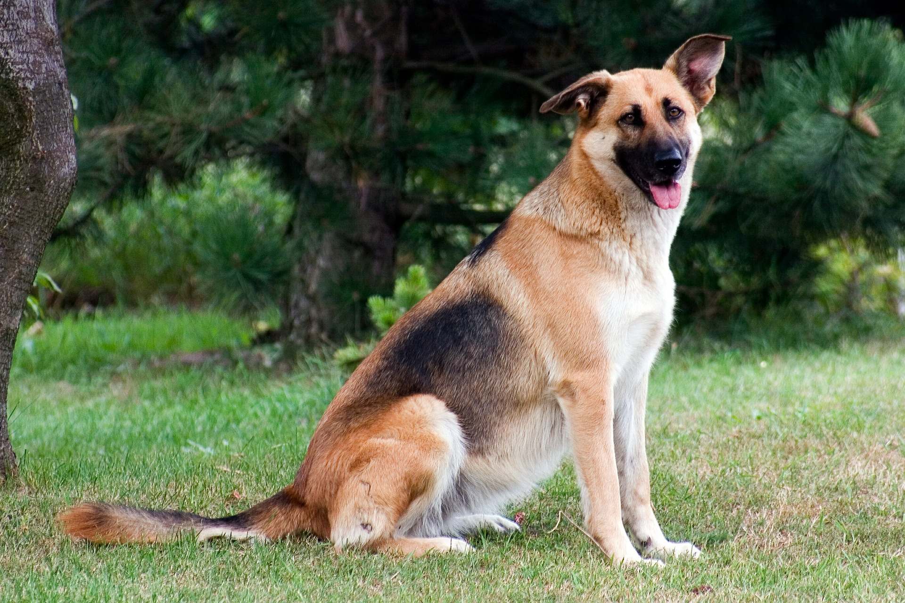
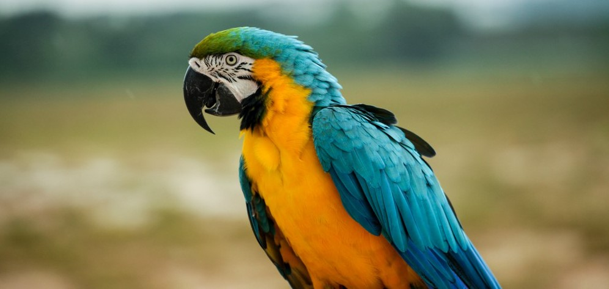

Es importante que pensemos que adoptar significa cuidar de un ser vivo, no es un juguete que se tire o se cambie, no son cromos que se intercambian entre amigos y no son peluches, son seres vivos y tienen que ser tratados como tal, con cuidado y con cariño. Piensa antes de adoptar, es una gran responsabilidad.

Perros
-Si decides adoptar un perro, lo recibirás con microchip, vacunados, desparasitados interna y externamente, con snap para descartar leishmania, filaria, anaplasma, lyme y erlicchia caso de ser mayores de 7 meses de edad.
-La castración/esterilización es obligatoria, y caso de no poder realizarse por la edad del animal, en el contrato de cesión el adoptante se compromete a la futura intervención, que cubre la Asociación con los veterinarios colaboradores.
Gatos
-Los gatos se pueden testar solo a partir de 2 meses y medio o tres de edad, pero buena parte de sus enfermedades no les impiden vivir una larga vida con sus adoptantes, así que no debería considerarse un impedimento.
-Se entregarán igualmente bajo contrato de cesión, con análisis de Inmunodeficiencia y Leucemia, desparasitados, vacunados, con microchip, y esterilizados.

Otros animales
-Si disponemos de otros animales (cobayas, conejos, hurones, etc.) el proceso sería similar al resto de animales.
Lo que debes saber para adoptar una mascota:
-La asociación tiene el derecho de no entregarte la mascota si no se cumplen los requisitos exigidos.
-Puede solicitar que la presentación o adopción del animal se realice en el domicilio en el que vivirá la mascota para conocer su futuro entorno.
-Durante el régimen de acogida se realizará un seguimiento para ver qué tal se adapta la mascota a la familia y comprobar que se cumple el compromiso adquirido.
-Si te encuentras un animal abandonado existe un plazo de tiempo que hay que esperar antes de poder adoptarlo oficialmente por si el dueño lo ha perdido y lo quiere reclamar.
Antes de saber dónde y cómo adoptar un perro, necesitas reflexionar y ser muy sincero contigo mismo sobre si estás preparado para asumir la responsabilidad de proveer una vida sana, digna y feliz a un peludo. Más allá de la legítima voluntad de compartir tu hogar con un perrito, necesitarás tener el tiempo, la paciencia, la dedicación y la solvencia económica necesaria para brindarle una nutrición completa y equilibrada, actividad física y estimulación mental, un ambiente enriquecido y una adecuada medicina preventiva.
Si evalúas que estás preparado para cuidar a un perro, necesitarás decidir dónde adoptarás a tu nuevo mejor amigo. Lo ideal es que te pongas en contacto o acudas a una protectora, un albergue o un centro de acogida para animales de compañía, que se encargan de asegurar que los perros en adopción estén en buen estado de salud y cuentan con profesionales y voluntarios que podrán orientarte durante el proceso de adopción y de adaptación del perro a su nuevo hogar. Además, las protectoras te permiten hacer visitas previas para conocer los perritos que se encuentran en adopción y poder conocer un poco más sobre la historia, el temperamento y las necesidades especificas de cada uno de ellos.
Sin embargo, también encontrarás a particulares que dan en adopción a perros rescatados de las calles, o bien a los cachorros de sus propios peludos. En líneas generales, este procedimiento es informal, por lo que no contarás con el respaldo de una asociación o de profesionales especializados.También encontrarás alternativas de adoptar a mascotas por Internet, a través de marketplaces o redes sociales, pero estos trámites no son seguros ni recomendables, ya que se desconoce la procedencia de los animales y podrías terminar fomentando la cría irregular de animales de compañía.